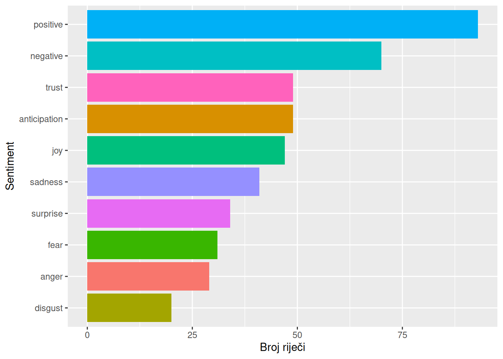
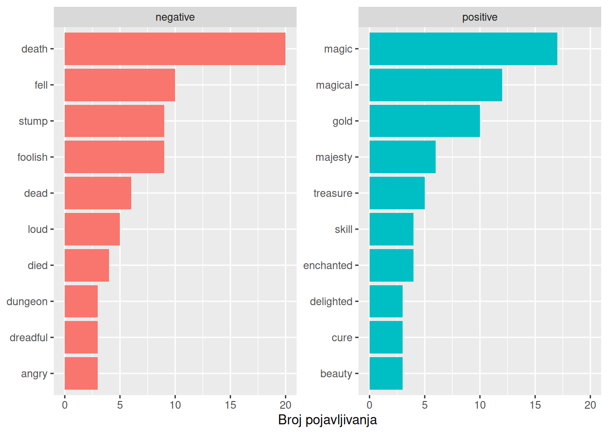
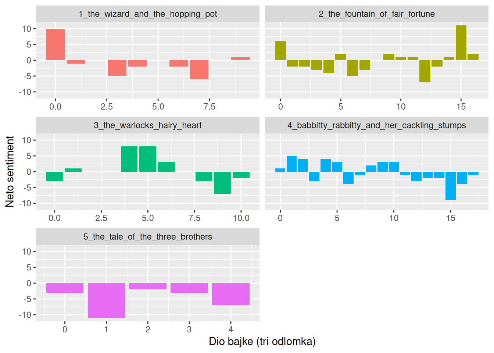
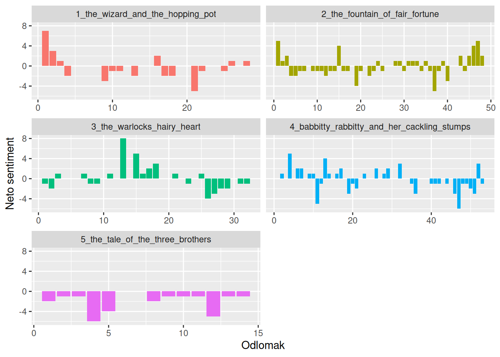
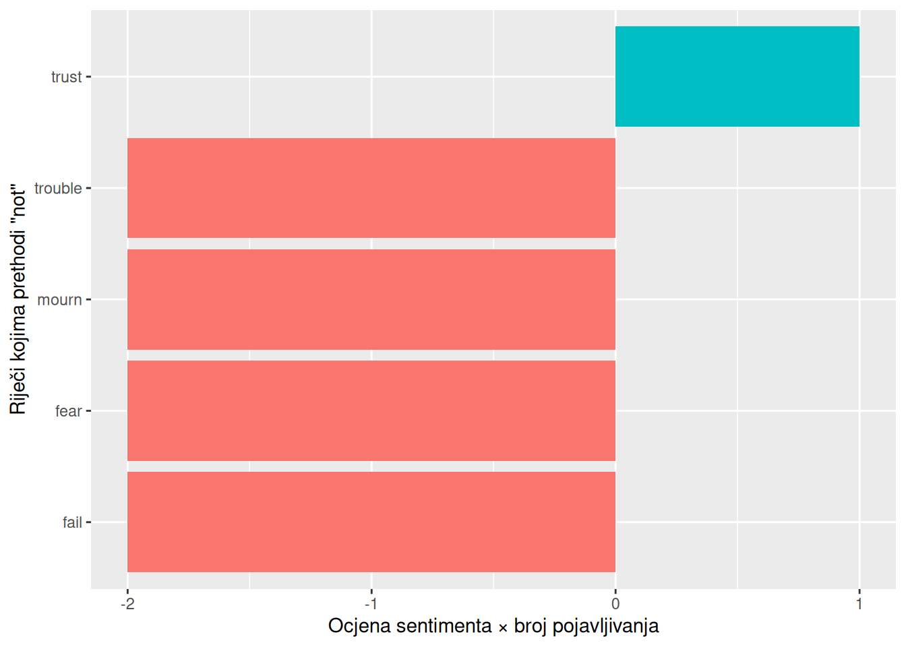
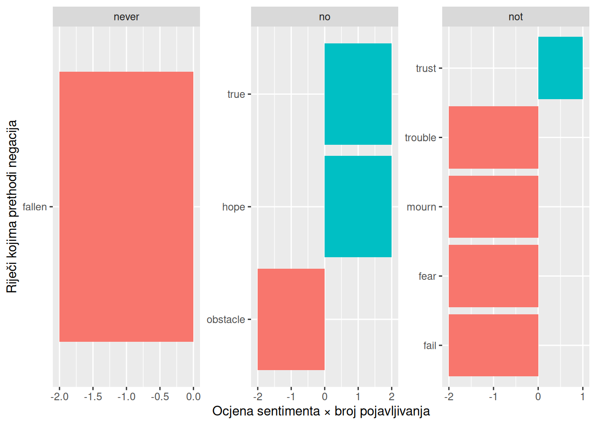

Tekst ne prenosi samo informacije, nego i osjećaje. Isti događaj može se opisati radosno ili tjeskobno, a čitatelj gotovo nesvjesno prepoznaje kada se ton priče mijenja, kada raste napetost i kada nastupa olakšanje. Analiza sentimenata pokušava taj emocionalni sloj teksta učiniti mjerljivim tako da riječima pridružuje vrijednosti iz unaprijed pripremljenih rječnika osjećaja. Takav je pristup jednostavan i pregledan, ali i ograničen jer riječ izvučena iz rečenice gubi kontekst, a negacija, ironija ili neobičan jezik mogu promijeniti njezino značenje. Zato je za analizu sentimenata jednako važno znati što ona može pokazati koliko i gdje griješi.
Kad čitamo tekst, na temelju značenja riječi zaključujemo je li neki njegov dio pozitivan ili negativan te prevladava li u njemu neka emocija, poput radosti, straha ili gađenja. Analiza sentimenata (engl. sentiment analysis) postupak je kojim se taj emocionalni ton teksta pokušava odrediti računalno. Cilj joj je prepoznati stavove, mišljenja i emocije izražene u tekstu. Primjenjuje se, primjerice, na društvenim mrežama gdje se analizom objava i komentara prate javno mnijenje i reakcije na događaje, u marketingu gdje se analizom recenzija proizvoda i usluga utvrđuje što kupci o njima misle, u politici gdje se analizom medijskih sadržaja i komentara prate stavovi javnosti o strankama, političarima i javnim politikama i slično. Ovdje ćemo se koristiti najjednostavnijim pristupom koji tekst promatramo kao skup pojedinačnih riječi, a sentiment teksta kao zbroj sentimenata riječi od kojih se sastoji.
11.1 Leksikoni sentimenata
Sentiment pojedinih riječi određuje se pomoću leksikona sentimenata, rječnika u kojima je velikom broju riječi pridružena oznaka ili ocjena sentimenta. Paket tidytext omogućuje pristup četirima leksikonima za engleski jezik: bing, AFINN, nrc i loughran. Svi se temelje na pojedinačnim riječima, a dohvaćaju se funkcijom get_sentiments() kojoj se kao argument zadaje naziv leksikona.
Leksikon bing dio je paketa tidytext, dok se leksikoni AFINN, nrc i loughran preuzimaju s interneta paketom textdata. Pri prvom pozivu, npr. get_sentiments("afinn"), R pita prihvaćamo li uvjete korištenja leksikona na što treba odgovoriti u konzoli. Leksikon se zatim sprema na računalo i sljedeći put učitava bez pitanja. Zato svaki od tih leksikona prvi put treba učitati ručno u konzoli, a ne pri renderiranju dokumenta jer renderiranje na pitanje ne može odgovoriti i zaustavit će se.
Leksikon bing kategorizira riječi na binarni način u pozitivne i negativne kategorije. Bing sadrži riječi označene kao pozitivne ili negativne te je prikladan za osnovne analize sentimenta, no ne prepoznaje intenzitet emocija te ne daje dodatne informacije o specifičnim emocijama (npr. ljutnja, radost).
AFINN leksikon ocjenjuje riječi s rezultatom koji se kreće između -5 i 5 pri čemu negativni rezultat ukazuje na negativan sentiment, a pozitivni na pozitivan. AFINN leksikon je koristan kada nam je potrebna kvantitativna mjera koja omogućuje nijansirano razumijevanje sentimenta i kod tekstova gdje je intenzitet emocija važan. S druge strane, taj leksikon nema kategorije za neutralne emocije te nije toliko bogat u smislu raznolikosti emocija.
Leksikon NRC kategorizira riječi u nekoliko kategorija riječi: pozitivne, negativne, riječi ljutnje, iščekivanja, gađenja, straha, radosti, tuge, iznenađenja i povjerenja. NRC leksikon je bogat u raznolikosti emocija pružajući detaljniju analizu na temelju čega može analizirati emocionalni ton teksta, ali, kao i bing, ne razlikuje pojedine emocije.
get_sentiments("nrc")
# A tibble: 13,872 × 2
word sentiment
<chr> <chr>
1 abacus trust
2 abandon fear
3 abandon negative
4 abandon sadness
5 abandoned anger
6 abandoned fear
7 abandoned negative
8 abandoned sadness
9 abandonment anger
10 abandonment fear
# ℹ 13,862 more rows
Leksikon loughran dizajniran je specifično za financijske i poslovne tekstove klasificirajući riječi u šest kategorija: pozitivno, negativno, sudsko-pravno, nesigurnost, ograničavajuće i suvišno. Budući da je prilagođen poslovnom jeziku, za opće tekstove, pa i za bajke, nije prikladan.
Odabir leksikona sentimenta za analizu teksta ovisi o specifičnim potrebama analize, prirodi teksta i vrsti informacija koju želimo izvući.
Svrha analize
Preporučeni leksikon
razvrstavanje na pozitivno i negativno
bing, nrc
intenzitet sentimenta
AFINN
analiza pojedinih emocija
nrc
poslovni i financijski tekstovi
loughran
Leksikoni sentimenata izrađeni su za suvremeni engleski jezik i provjereni uglavnom na suvremenim tekstovima, poput recenzija i objava na društvenim mrežama. Na tekstovima drugačijeg žanra, poput bajki, mogu davati manje pouzdane rezultate jer neke riječi u njima imaju drugačije značenje. Primjerice, riječi fair i fortune u leksikonu bing označene su kao pozitivne pa se svako spominjanje fontane Fountain of Fair Fortune broji kao dvije pozitivne riječi, iako je riječ samo o nazivu.
11.2 Sentiment pojedinih riječi
Analiza sentimenata provodi se na tekstu tokeniziranom na riječi iz kojeg su uklonjene zaustavne riječi. Riječi iz teksta zatim povezujemo s riječima iz leksikona funkcijom inner_join() iz paketa dplyr. Ona zadržava samo one riječi iz teksta koje se nalaze i u leksikonu, a svakoj od njih pridružuje oznaku sentimenta iz leksikona. Argumentom by = "word" navodimo da se tablice povezuju prema stupcu word.
Recimo da nas zanimaju riječi koje izražavaju radost u bajci The Fountain of Fair Fortune. Najprije iz leksikona nrc izdvajamo riječi u kategoriji radosti (joy), a zatim ih povezujemo s riječima iz bajke i brojimo.
# Riječi iz leksikona nrc koje izražavaju radostnrc_joy <-get_sentiments("nrc") |>filter(sentiment =="joy")# Riječi koje izražavaju radost u bajci The Fountain of Fair FortunetToBtB_word_tokens_stop_words |>filter(fairy_tale =="2_the_fountain_of_fair_fortune") |>inner_join(nrc_joy, by ="word") |>count(word, sort =TRUE)
# A tibble: 25 × 2
word n
<chr> <int>
1 garden 6
2 sun 6
3 enchanted 3
4 fortune 3
5 happy 3
6 pay 3
7 delighted 2
8 found 2
9 lover 2
10 magical 2
# ℹ 15 more rows
U bajci The Fountain of Fair Fortune pojavljuje se 25 različitih riječi koje leksikon nrc svrstava u kategoriju radosti. Najčešće su garden i sun (po 6 pojavljivanja), a slijede enchanted, fortune, happy i pay (po 3) te delighted, found, lover i magical (po 2). Neke od njih, poput happy, delighted ili lover, doista izražavaju radost. Za druge to vrijedi tek uvjetno, primjerice garden i sun koje su u bajci ponajprije mjesto i doba dana, a fortune se većinom pojavljuje kao dio naziva fontane. Riječ pay u kategoriju radosti svrstana je prema jednom od svojih značenja (nagrada, isplata) koje ne mora odgovarati značenju u tekstu. Ovaj primjer dobro pokazuje glavno ograničenje analize sentimenata pomoću leksikona, da je oznaka sentimenta pridružena riječi, a ne njezinu značenju u konkretnom tekstu. Zato rezultate uvijek treba provjeriti pregledom riječi koje su im najviše pridonijele.
Na isti način možemo prebrojati riječi u svim kategorijama leksikona nrc. Razlika je samo u tome što leksikon ne filtriramo, nego povezujemo cijeli leksikon i brojimo riječi po kategorijama sentimenta. Pritom je u funkciji potreban argument relationship = "many-to-many" jer se ista riječ u leksikonu nrc može pojaviti u više kategorija, a ista riječ u bajci više puta. Bez tog argumenta funkcija javlja upozorenje.
# Broj riječi po kategorijama sentimenta u bajci The Fountain of Fair FortunetToBtB_word_tokens_stop_words |>filter(fairy_tale =="2_the_fountain_of_fair_fortune") |>inner_join(get_sentiments("nrc"), by ="word", relationship ="many-to-many") |>count(sentiment, sort =TRUE) |>ggplot(aes(x = n, y =fct_reorder(sentiment, n), fill = sentiment)) +geom_col(show.legend =FALSE) +labs(x ="Broj riječi", y ="Sentiment")

Najviše je riječi u općim kategorijama pozitivnog (oko 90) i negativnog sentimenta (oko 70), a što je i očekivano jer leksikon nrc u te dvije kategorije svrstava najveći broj riječi. Među pojedinim emocijama najzastupljeniji su povjerenje, iščekivanje i radost, s po pedesetak riječi, a slijede tuga, iznenađenje, strah i ljutnja. Najmanje je riječi koje izražavaju gađenje, oko 20. Bajka The Fountain of Fair Fortune tako ima pretežno pozitivan emocionalni ton s naglaskom na povjerenju, iščekivanju i radosti, a što odgovara priči o putovanju prema fontani koja ispunjava želje. Ipak, ni negativni osjećaji nisu zanemarivi pa je riječ o priči u kojoj se smjenjuju nada i poteškoće. Pritom treba imati na umu ograničenje koje smo vidjeli u prethodnom primjeru, da je dio riječi, poput garden, sun ili fortune, svrstan u pozitivne kategorije zbog svog općeg značenja, a ne zbog uloge u bajci.
11.2.1 Najčešće pozitivne i negativne riječi
Korisno je pogledati i koje riječi najviše pridonose pozitivnom, a koje negativnom sentimentu. Tako se može provjeriti odgovaraju li oznake iz leksikona značenju riječi u našem tekstu. Za to koristimo leksikon bing.
# Najčešće pozitivne i negativne riječi u bajkamatToBtB_bing_word_counts <- tToBtB_word_tokens_stop_words |>inner_join(get_sentiments("bing"), by ="word") |>count(word, sentiment, sort =TRUE)# PregledtToBtB_bing_word_counts
# A tibble: 277 × 3
word sentiment n
<chr> <chr> <int>
1 death negative 20
2 magic positive 17
3 magical positive 12
4 fell negative 10
5 gold positive 10
6 foolish negative 9
7 stump negative 9
8 dead negative 6
9 majesty positive 6
10 loud negative 5
# ℹ 267 more rows
# Grafički prikaztToBtB_bing_word_counts |>group_by(sentiment) |>slice_max(n, n =10, with_ties =FALSE) |>ungroup() |>ggplot(aes(x = n, y =reorder_within(word, n, sentiment), fill = sentiment)) +geom_col(show.legend =FALSE) +facet_wrap(~sentiment, scales ="free_y") +scale_y_reordered() +labs(x ="Broj pojavljivanja", y =NULL)

U bajkama se pojavljuje 277 različitih riječi kojima leksikon bing pridružuje sentiment. Najčešća negativna riječ je death (20 pojavljivanja), a slijede fell (10), stump i foolish (po 9) te dead (6). Najčešće pozitivne riječi su magic (17), magical (12), gold (10) i majesty (6).
Popis pokazuje koliko je važno provjeriti riječi koje najviše pridonose sentimentu. Riječi poput death, dead, foolish ili dreadful doista nose negativan sentiment, a delighted, treasure ili beauty pozitivan. No nekoliko je riječi svrstano pogrešno jer leksikon ne poznaje njihovo značenje u bajkama. Riječ stump u leksikonu je negativna, ali se u bajkama odnosi na panj iz bajke Babbitty Rabbitty and Her Cackling Stumps. Riječ fell u leksikonu je negativan pridjev (okrutan, smrtonosan), a u tekstu je najvjerojatnije prošlo vrijeme glagola fall (pasti). Riječ majesty pozitivna je, iako se u bajkama koristi kao oslovljavanje kralja (Your Majesty). Slično tome, magic i magical u svijetu čarobnjaka i vještica nisu izraz pozitivnog stava, nego opis svakodnevice. Takve riječi iskrivljuju rezultat pa ih je opravdano ukloniti iz analize, primjerice tako da se dodaju na popis zaustavnih riječi.
11.3 Sentiment kroz tekst
Analiza sentimenata posebno je zanimljiva kad pratimo kako se sentiment mijenja kroz priču. Za to tekst dijelimo na manje dijelove i za svaki dio računamo neto sentiment, odnosno razliku između broja pozitivnih i broja negativnih riječi. Postupak je sljedeći:
Funkcijom inner_join() riječima pridružujemo sentiment iz leksikona bing.
Funkcijom count() brojimo pozitivne i negativne riječi u svakom dijelu svake bajke. Dio teksta određujemo stupcem index koji ovdje stvaramo izravno unutar funkcije count(), odnsono paragraph_no %/% 3 dijeli redni broj odlomka s 3 i zadržava samo cijeli dio rezultata (cjelobrojno dijeljenje) pa odlomci 0 do 2 dobivaju indeks 0, odlomci 3 do 5 indeks 1 i tako dalje. Tako svaki dio teksta obuhvaća tri odlomka.
Funkcijom pivot_wider() pozitivne i negativne riječi stavljamo u zasebne stupce, a pri čemu dijelovima bez pozitivnih ili negativnih riječi upisujemo 0 (values_fill = 0).
Veličina dijela teksta važna je odluka. Premali dijelovi imaju premalo riječi s oznakom sentimenta za pouzdanu procjenu, a preveliki prikrivaju promjene u priči. Za kratke tekstove poput bajki dobro funkcioniraju dijelovi od nekoliko odlomaka, ali to valja prilagoditi svakom tekstu.
# Neto sentiment u dijelovima od tri odlomkatToBtB_sentiment <- tToBtB_word_tokens_stop_words |>inner_join(get_sentiments("bing"), by ="word") |>count(fairy_tale, index = paragraph_no %/%3, sentiment) |>pivot_wider(names_from = sentiment, values_from = n, values_fill =0) |>mutate(sentiment = positive - negative)# PregledtToBtB_sentiment
# Grafički prikazggplot(tToBtB_sentiment, aes(x = index, y = sentiment, fill = fairy_tale)) +geom_col(show.legend =FALSE) +facet_wrap(~fairy_tale, ncol =2, scales ="free_x", labeller =label_wrap_gen(width =25)) +labs(x ="Dio bajke (tri odlomka)", y ="Neto sentiment")

Svaki graf prikazuje jednu bajku od početka do kraja. Stupci iznad nule označavaju dijelove u kojima prevladavaju pozitivne riječi, a stupci ispod nule dijelove u kojima prevladavaju negativne. Ako za neki dio stupca nema, u tom dijelu nema nijedne riječi iz leksikona.
Bajke se po kretanju sentimenta jasno razlikuju. Bajka The Wizard and the Hopping Pot počinje izrazito pozitivno. U prvom dijelu nalazi se 13 pozitivnih i samo 3 negativne riječi (neto sentiment +10). Nakon toga prevladavaju negativni dijelovi, a sentiment se vraća prema nuli tek pred kraj. Bajka The Fountain of Fair Fortune također počinje pozitivno, u sredini se kolebaju blago pozitivni i blago negativni dijelovi, a pred kraj se pojavljuje izrazito pozitivan dio, a što odgovara sretnom završetku priče. U bajci The Warlock’s Hairy Heart kretanje je obrnuto, odnosno pozitivni dijelovi nalaze se u sredini, a kraj je negativan, a što odgovara tragičnom završetku. Bajka Babbitty Rabbitty and Her Cackling Stumps kroz cijelu se priču koleba oko nule s jednim izrazitije negativnim dijelom pred kraj. Bajka The Tale of the Three Brothers jedina je u kojoj su svi dijelovi negativni što ne iznenađuje u priči u kojoj je smrt jedan od glavnih likova.
Ovakav prikaz pokazuje emocionalni luk priče, odnosno kako se ton mijenja od početka do kraja. Ipak, treba ga tumačiti oprezno. Bajke su kratke pa svaki dio sadrži tek nekoliko riječi iz leksikona, a već jedna ili dvije riječi mogu promijeniti smjer stupca. Uz to, na rezultat utječu i riječi koje leksikon pogrešno tumači, kao što smo vidjeli u prethodnom odjeljku.
Ako za dio teksta uzmemo samo jedan odlomak, prikaz je detaljniji, ali i nemirniji. Jedina je razlika u tome što je indeks sada sam redni broj odlomka.
# Neto sentiment po odlomcimatToBtB_paragraph_sentiment <- tToBtB_word_tokens_stop_words |>inner_join(get_sentiments("bing"), by ="word") |>count(fairy_tale, index = paragraph_no, sentiment) |>pivot_wider(names_from = sentiment, values_from = n, values_fill =0) |>mutate(sentiment = positive - negative)# Grafički prikazggplot(tToBtB_paragraph_sentiment, aes(x = index, y = sentiment, fill = fairy_tale)) +geom_col(show.legend =FALSE) +facet_wrap(~fairy_tale, ncol =2, scales ="free_x", labeller =label_wrap_gen(width =25)) +labs(x ="Odlomak", y ="Neto sentiment")

Prikaz po odlomcima detaljniji je, ali i znatno nemirniji od prikaza po dijelovima od tri odlomka. Većina odlomaka ima neto sentiment od svega nekoliko riječi u jednom ili drugom smjeru, a u mnogim odlomcima stupca uopće nema jer u njima nema nijedne riječi iz leksikona. Zato se iz ovakvog prikaza teže iščitava ukupno kretanje priče. Ipak, glavni obrasci ostaju isti, a prikaz po odlomcima pokazuje i nešto što se u prikazu po dijelovima gubi, primjerice, točno mjesto naglih promjena tona, poput pojedinačnih izrazito pozitivnih odlomaka u bajci The Fountain of Fair Fortune. Usporedba dvaju prikaza dobro pokazuje da je veličina dijela teksta odluka koja utječe na to što ćemo u podacima vidjeti.
11.3.1 Najnegativniji odlomci
Sentiment možemo izračunati i za cijele odlomke, primjerice kako bismo pronašli najnegativniji odlomak u svakoj bajci. Budući da su odlomci različite duljine, broj negativnih riječi treba podijeliti s ukupnim brojem riječi u odlomku, kako duži odlomci ne bi imali prednost. Postupak je sljedeći:
Iz leksikona bing izdvajamo negativne riječi.
Za svaki odlomak brojimo ukupan broj riječi.
Za svaki odlomak brojimo negativne riječi. Funkcija semi_join() zadržava samo one riječi iz teksta koje se nalaze u popisu negativnih riječi, ali im, za razliku od funkcije inner_join(), ne dodaje stupce iz leksikona.
Spajamo oba broja i računamo udio negativnih riječi u odlomku. Pritom izostavljamo vrlo kratke odlomke, s manje od deset riječi, jer bi u njima već jedna negativna riječ činila velik udio.
Za svaku bajku izdvajamo odlomak s najvećim udjelom negativnih riječi.
# Negativne riječi iz leksikona bingbing_negative <-get_sentiments("bing") |>filter(sentiment =="negative")# Ukupan broj riječi u svakom odlomkutToBtB_word_counts <- tToBtB_word_tokens_stop_words |>count(fairy_tale, paragraph_no, name ="words")# Broj negativnih riječi u svakom odlomkutToBtB_negative_counts <- tToBtB_word_tokens_stop_words |>semi_join(bing_negative, by ="word") |>count(fairy_tale, paragraph_no, name ="negative_words")# Najnegativniji odlomak u svakoj bajcitToBtB_negative_counts |>left_join(tToBtB_word_counts, by =c("fairy_tale", "paragraph_no")) |>filter(words >=10) |>mutate(ratio = negative_words / words) |>group_by(fairy_tale) |>slice_max(ratio, n =1, with_ties =FALSE) |>ungroup()
negative_words - broj negativnih riječi u odlomku,
words - ukupan broj riječi u odlomku (nakon uklanjanja zaustavnih riječi) i
ratio – udio negativnih riječi u ukupnom broju riječi u odlomku.
Najveći udio negativnih riječi ima odlomak 37 bajke The Fountain of Fair Fortune kod kojeg, od njegovih deset riječi (nakon uklanjanja zaustavnih riječi), pet je negativnih pa je udio 0,5, odnosno svaka druga riječ. Slijede odlomak 12 bajke The Tale of the Three Brothers (6 negativnih riječi od 17, udio 0,35), odlomak 9 bajke The Warlock’s Hairy Heart (5 od 16, udio 0,31) i odlomak 47 bajke Babbitty Rabbitty and Her Cackling Stumps (6 od 21, udio 0,29). Najnegativniji odlomak bajke The Wizard and the Hopping Pot, odlomak 13, ima znatno manji udio negativnih riječi (2 od 11, udio 0,18) pa je ta bajka, barem prema leksikonu bing, najblaža po tonu.
Rezultat treba tumačiti oprezno. Najnegativniji odlomak bajke The Fountain of Fair Fortune ima točno deset riječi, koliko iznosi granica koju smo postavili, pa je njegov visok udio dijelom posljedica kratkoće. Zato je dobro pročitati i same odlomke, kako bismo provjerili odgovara li njihov sadržaj izračunatom sentimentu.
11.4 Sentiment izvan pojedinačnih riječi
Ponekad je korisno pogledati različite jedinice teksta umjesto pojedinih riječi jer neki algoritmi za analizu sentimenta gledaju dalje od pojedinačnih riječi kako bi pokušali razumjeti sentiment rečenice u cjelini. Primjerice, u rečenici I am not happy riječ happy pozitivna je, iako je rečenica u cjelini negativna jer je riječ negirana. Neki postupci analize sentimenta zato ne gledaju pojedinačne riječi, nego veće jedinice teksta, poput rečenica. Za to tekst treba tokenizirati na rečenice argumentom token = "sentences" funkcije unnest_tokens().
# A tibble: 316 × 4
line fairy_tale paragraph_no sentence
<int> <chr> <int> <chr>
1 20 1_the_wizard_and_the_hopping_pot 1 "there was once a kindly…
2 20 1_the_wizard_and_the_hopping_pot 1 "rather than reveal the …
3 20 1_the_wizard_and_the_hopping_pot 1 "from miles around peopl…
4 21 1_the_wizard_and_the_hopping_pot 2 "this well-beloved wizar…
5 21 1_the_wizard_and_the_hopping_pot 2 "this son was of a very …
6 21 1_the_wizard_and_the_hopping_pot 2 "those who could not wor…
7 22 1_the_wizard_and_the_hopping_pot 3 "upon the father's death…
8 22 1_the_wizard_and_the_hopping_pot 3 "he opened it, hoping fo…
9 22 1_the_wizard_and_the_hopping_pot 3 "a fragment of parchment…
10 23 1_the_wizard_and_the_hopping_pot 4 "the son cursed his fath…
# ℹ 306 more rows
Tekst se može podijeliti i na veće cjeline, primjerice na poglavlja, argumentom token = "regex" i regularnim izrazom koji prepoznaje naslove poglavlja. U našem je primjeru tekst već podijeljen na bajke i odlomke, pa to nije potrebno.
Jednostavniji način da se uzme u obzir kontekst je analiza bigrama. Kad je tekst podijeljen na bigrame, možemo vidjeti kojim riječima prethodi negacija, primjerice riječ not. Za to koristimo bigrame sa zaustavnim riječima jer su riječi poput not, no i never i same zaustavne riječi.
# Podjela bigrama na dvije riječitToBtB_bigram_separated <- tToBtB_bigram |>separate(bigram, c("word1", "word2"), sep =" ")# Riječi kojima prethodi "not"tToBtB_bigram_separated |>filter(word1 =="not") |>count(word1, word2, sort =TRUE)
# A tibble: 21 × 3
word1 word2 n
<chr> <chr> <int>
1 not all 2
2 not let 2
3 not sleep 2
4 not a 1
5 not believe 1
6 not even 1
7 not fail 1
8 not fear 1
9 not know 1
10 not mourn 1
# ℹ 11 more rows
Riječima koje slijede iza negacije možemo pridružiti sentiment iz leksikona AFINN i vidjeti koje od njih imaju sentiment, a analiza ih broji u pogrešnom smjeru.
# Leksikon AFINNafinn <-get_sentiments("afinn")# Riječi sa sentimentom kojima prethodi "not"tToBtB_not_words <- tToBtB_bigram_separated |>filter(word1 =="not") |>inner_join(afinn, by =c(word2 ="word")) |>count(word2, value, sort =TRUE)# PregledtToBtB_not_words
# A tibble: 5 × 3
word2 value n
<chr> <dbl> <int>
1 fail -2 1
2 fear -2 1
3 mourn -2 1
4 trouble -2 1
5 trust 1 1
Riječi kojima prethodi not i koje imaju ocjenu u leksikonu AFINN u bajkama je samo pet i svaka se pojavljuje samo jednom. Četiri su negativne: fail, fear, mourn i trouble, sve s ocjenom -2. Jedna je pozitivna, trust, s ocjenom 1. Negacija u bajkama, dakle, nije česta pa njezin utjecaj na ukupan sentiment nije velik. Ipak, sve su te riječi u analizi pojedinačnih riječi ubrojene u pogrešnom smjeru, not fear ili not mourn izražavaju olakšanje, a ne strah ili tugu, dok not trust izražava nepovjerenje.
Koliko je koja od tih riječi pridonijela pogrešnom smjeru sentimenta, možemo izračunati tako da njezinu ocjenu pomnožimo s brojem pojavljivanja. Riječ s ocjenom +3 koja se pojavljuje deset puta tako ima isti učinak kao riječ s ocjenom +1 koja se pojavljuje 30 puta.
# Doprinos riječi kojima prethodi "not"tToBtB_not_words |>mutate(contribution = n * value) |>slice_max(abs(contribution), n =20, with_ties =FALSE) |>ggplot(aes(x = contribution, y =fct_reorder(word2, contribution), fill = contribution >0)) +geom_col(show.legend =FALSE) +labs(x ="Ocjena sentimenta × broj pojavljivanja",y ="Riječi kojima prethodi \"not\"" )

U našem primjeru četiri riječi s negativnom ocjenom (fail, fear, mourn i trouble) pridonose s po -2, a riječ trust s +1. Zajedno su ukupnom sentimentu pridonijele -7, iako bi, uzme li se u obzir negacija, njihov doprinos trebao biti pozitivan. Budući da se svaka od njih pojavljuje samo jednom, ta je pogreška u bajkama mala, no u duljim tekstovima u kojima su negacije česte, može znatno iskriviti rezultat.
Riječ not nije jedina riječ koja negira sljedeću riječ. Isti postupak možemo provesti za nekoliko uobičajenih negacija odjednom.
# Uobičajene negacijenegation_words <-c("not", "no", "never", "without")# Riječi sa sentimentom kojima prethodi negacijatToBtB_negated_words <- tToBtB_bigram_separated |>filter(word1 %in% negation_words) |>inner_join(afinn, by =c(word2 ="word")) |>count(word1, word2, value, sort =TRUE)# PregledtToBtB_negated_words
# A tibble: 9 × 4
word1 word2 value n
<chr> <chr> <dbl> <int>
1 never fallen -2 1
2 no hope 2 1
3 no obstacle -2 1
4 no true 2 1
5 not fail -2 1
6 not fear -2 1
7 not mourn -2 1
8 not trouble -2 1
9 not trust 1 1
# Grafički prikaztToBtB_negated_words |>mutate(contribution = n * value) |>group_by(word1) |>slice_max(abs(contribution), n =10, with_ties =FALSE) |>ungroup() |>ggplot(aes(x = contribution, y =reorder_within(word2, contribution, word1), fill = contribution >0)) +geom_col(show.legend =FALSE) +facet_wrap(~word1, scales ="free") +scale_y_reordered() +labs(x ="Ocjena sentimenta × broj pojavljivanja",y ="Riječi kojima prethodi negacija" )

Uz četiri negacije pronađeno je ukupno devet riječi sa sentimentom, a svaka se pojavljuje samo jednom. Najviše ih slijedi iza riječi not (pet), zatim iza riječi no (tri) i never (jedna), dok iza riječi without nema nijedne. Kod riječi no i never vidi se isti problem kao i kod riječi not jer no hope izražava beznađe, a ne nadu, dok no obstacle i never fallen imaju pozitivno značenje, iako su ih leksikon i analiza pojedinačnih riječi ubrojili kao negativne.
Primjer no true pokazuje, međutim, da negacija ne mijenja uvijek smjer sentimenta riječi koja slijedi. U izrazima poput no true wizard riječ no ne negira riječ true, nego cijeli izraz pa ovakav jednostavan postupak ne može pouzdano odrediti stvarno značenje. Analiza bigrama zato je koristan način da se otkriju mjesta na kojima analiza pojedinačnih riječi griješi, ali ne i potpuno rješenje problema konteksta. Za to su potrebni složeniji postupci koji uzimaju u obzir strukturu cijele rečenice.
Pri usporedbi grafova treba imati na umu da svaki ima vlastitu skalu na osi x (scales = "free"). Graf za riječ never zato izgleda kao da prikazuje veliku vrijednost, iako je riječ o jednom pojavljivanju s doprinosom −2, jednakom kao kod riječi fail ili fear.